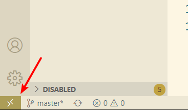

linux学习
apt 更换国内源
修改 /etc/apt/sources.list 文件即可，将内容更换为任意一种国内源即可
国内源：
1.阿里源
xxxxxxxxxxdeb-src http://archive.ubuntu.com/ubuntu xenial main restricted #Added by software-propertiesdeb http://mirrors.aliyun.com/ubuntu/ xenial main restricteddeb-src http://mirrors.aliyun.com/ubuntu/ xenial main restricted multiverse universe #Added by software-propertiesdeb http://mirrors.aliyun.com/ubuntu/ xenial-updates main restricteddeb-src http://mirrors.aliyun.com/ubuntu/ xenial-updates main restricted multiverse universe #Added by software-propertiesdeb http://mirrors.aliyun.com/ubuntu/ xenial universedeb http://mirrors.aliyun.com/ubuntu/ xenial-updates universedeb http://mirrors.aliyun.com/ubuntu/ xenial multiversedeb http://mirrors.aliyun.com/ubuntu/ xenial-updates multiversedeb http://mirrors.aliyun.com/ubuntu/ xenial-backports main restricted universe multiversedeb-src http://mirrors.aliyun.com/ubuntu/ xenial-backports main restricted universe multiverse #Added by software-propertiesdeb http://archive.canonical.com/ubuntu xenial partnerdeb-src http://archive.canonical.com/ubuntu xenial partnerdeb http://mirrors.aliyun.com/ubuntu/ xenial-security main restricteddeb-src http://mirrors.aliyun.com/ubuntu/ xenial-security main restricted multiverse universe #Added by software-propertiesdeb http://mirrors.aliyun.com/ubuntu/ xenial-security universedeb http://mirrors.aliyun.com/ubuntu/ xenial-security multiverse
2.东北大学
xxxxxxxxxxdeb-src http://mirror.neu.edu.cn/ubuntu/ xenial main restricted #Added by software-propertiesdeb http://mirror.neu.edu.cn/ubuntu/ xenial main restricteddeb-src http://mirror.neu.edu.cn/ubuntu/ xenial restricted multiverse universe #Added by software-propertiesdeb http://mirror.neu.edu.cn/ubuntu/ xenial-updates main restricteddeb-src http://mirror.neu.edu.cn/ubuntu/ xenial-updates main restricted multiverse universe #Added by software-propertiesdeb http://mirror.neu.edu.cn/ubuntu/ xenial universedeb http://mirror.neu.edu.cn/ubuntu/ xenial-updates universedeb http://mirror.neu.edu.cn/ubuntu/ xenial multiversedeb http://mirror.neu.edu.cn/ubuntu/ xenial-updates multiversedeb http://mirror.neu.edu.cn/ubuntu/ xenial-backports main restricted universe multiversedeb-src http://mirror.neu.edu.cn/ubuntu/ xenial-backports main restricted universe multiverse #Added by software-propertiesdeb http://archive.canonical.com/ubuntu xenial partner deb-src http://archive.canonical.com/ubuntu xenial partnerdeb http://mirror.neu.edu.cn/ubuntu/ xenial-security main restricteddeb-src http://mirror.neu.edu.cn/ubuntu/ xenial-security main restricted multiverse universe #Added by software-propertiesdeb http://mirror.neu.edu.cn/ubuntu/ xenial-security universedeb http://mirror.neu.edu.cn/ubuntu/ xenial-security multiverse
3.清华大学
xxxxxxxxxxdeb http://mirrors.tuna.tsinghua.edu.cn/ubuntu/ xenial main restricteddeb http://mirrors.tuna.tsinghua.edu.cn/ubuntu/ xenial-updates main restricteddeb http://mirrors.tuna.tsinghua.edu.cn/ubuntu/ xenial universedeb http://mirrors.tuna.tsinghua.edu.cn/ubuntu/ xenial-updates universedeb http://mirrors.tuna.tsinghua.edu.cn/ubuntu/ xenial multiversedeb http://mirrors.tuna.tsinghua.edu.cn/ubuntu/ xenial-updates multiversedeb http://mirrors.tuna.tsinghua.edu.cn/ubuntu/ xenial-backports main restricted universe multiversedeb http://mirrors.tuna.tsinghua.edu.cn/ubuntu/ xenial-security main restricteddeb http://mirrors.tuna.tsinghua.edu.cn/ubuntu/ xenial-security universe deb http://mirrors.tuna.tsinghua.edu.cn/ubuntu/ xenial-security multiverse
pip更换国内源
linux下 Linux下，修改 ~/.pip/pip.conf。
xxxxxxxxxx[global]index-url = https://pypi.tuna.tsinghua.edu.cn/simple
[install]trusted-host=pypi.tuna.tsinghua.edu.cn
# 或者pip config set global.index-url https://pypi.tuna.tsinghua.edu.cn/simplewindows下，直接在user目录中创建一个pip目录，如：C:\Users\xx\pip，新建文件pip.ini。内容同上。
临时使用 ， pip install -i https://pypi.tuna.tsinghua.edu.cn/simple package
其他国内源 清华：https://pypi.tuna.tsinghua.edu.cn/simple
阿里云：http://mirrors.aliyun.com/pypi/simple/
中国科技大学 https://pypi.mirrors.ustc.edu.cn/simple/
华中理工大学：http://pypi.hustunique.com/
山东理工大学：http://pypi.sdutlinux.org/
豆瓣：http://pypi.douban.com/simple/
安装Anaconda后设置
1. 设置环境变量
linux下
xxxxxxxxxxvim ~/.bashrc # 当前用户生效vim /etc/profile # 所有用户生效
export PATH=~/anaconda3/bin:$PATH # 添加到文件末尾
source ~/.bashrc # 使环境变量生效Windows下
xxxxxxxxxx添加以下路径到环境变量(你安装anaconda的路径)D:\Anaconda3D:\Anaconda3\ScriptsD:\Anaconda3\Library\bin
2. conda换源
xxxxxxxxxxconda config --add channels https://mirrors.tuna.tsinghua.edu.cn/anaconda/pkgs/free/
conda config --set show_channel_urls yes其他源：
xxxxxxxxxx# 1. 中科大conda config --add channels https://mirrors.ustc.edu.cn/anaconda/pkgs/free/conda config --add channels https://mirrors.ustc.edu.cn/anaconda/pkgs/main/# 2.清华conda config --add https://mirrors.tuna.tsinghua.edu.cn/anaconda/pkgs/free/conda config --add channels https://mirrors.tuna.tsinghua.edu.cn/anaconda/pkgs/main/3. 设置conda默认环境(不是必须)
xxxxxxxxxxvim ~/.bashrc在文件末尾添加 source activate myenv
VS code通过SSH远程编辑服务器文件
1. 安装ssh环境
方法1：使用open ssh，win10可打开设置=>应用=>管理可选功能=>安装open sss客户端和服务器端 （设置里找不到可通过powershell安装）
或者如果有git自带ssh，那么直接使用git
2. 生成公钥
1.建立ssh信任(确认自己本机的公钥是否存在%USERPROFILE%.ssh\id_rsa.pub,不存在就生成,命令是：
ssh-keygen -t rsa -P ''
加上-P ''的意思是设置一个空密码，也可以不加，不加的话要按三次回车
2. 然后把公钥id_rsa.pub的内容追加到服务器/home/.ssh/authorized_keys文件里。这样做不用每次启动vscode都输入密码了
公钥追加到服务器可以采用以下方式
scp /root/.ssh/id_rsa.pub root@192.168.1.181:/root/.ssh/authorized_keys
(其中/root/.ssh/id_rsa.pub为你本地公钥路径；root为你的服务器用户名；192.168.1.181为你的服务器ip；)
3. authorized_keys的权限要是600!!!
chmod 600 /root/.ssh/authorized_keys
3. vs code连接
1. 安装Remote SSH插件
2. 点击左下角一个对尖括号标志

3. 打开Remote-SSH: Open Configuration File...,然后配置文件内容,例如
xxxxxxxxxxHost rootHostName 47.97.221.121Port 22User rootIdentityFile C:\Users\%user%\.ssh\id_rsa
4. 选择connect host之后就可以操作了
linux系统迁移
tar方法
打包
xxxxxxxxxx# ============打包=======================cd /tar -cvpzf backup.tar.gz --exclude=/backup.tar.gz --one-file-system / # 适用于只有一个分区# 如果打包后的压缩包太大，可以分卷压缩，有两种方法tar -cvpz --exclude=/backup.tar.gz --one-file-system / | split -d -b 2048m - backup.tar.gz# 或者完整压缩完之后再分割split -d -b 3900m /path/to/backup.tar.gz /name/of/backup.tar.gz还原
将打包好的文件拷贝到U盘或者其它存储介质，利用linux-live进入系统；
进入live系统后，搜索disk工具，将待安装系统的硬盘格式化，并新建一个分区用作安装系统（如果打包的系统有多个分区，那也建立对应分区）；
利用fdisk查看硬盘设备, 找到自己的分区，例如/dev/sda1
fdisk -l # 查看分区命令
挂载分区
mount /dev/sda1 /mnt # 将 /dev/sda1 挂载到 /mnt(自己选择其它目录也可以)
解压系统
sudo tar -xvpzf /path/to/backup.tar.gz -C /mnt --numeric-owner # 单个压缩包采用这种方式
cat backup.tar.gz* | tar -xvpz -C /mnt --numeric-owner # 分卷压缩采用这种方式
修改UUID
xxxxxxxxxx# 查看/dev/sda1的 UUIDblkid 或者 lsblk -f# 修改UUIDsudo vi /mnt/etc/fstab # 将 文件中 /dev/sda1的UUID替换为上面的UUIDsudo vi /mnt/etc/initramfs-tools/conf.d/resume（这里存储swap分区UUID，如果没有swap分区可以删除）修复grub
xxxxxxxxxx# 挂载分区for f in dev proc sys run ; do mount --bind /$f /mnt/$f ; done# 设置 /mnt为系统路径sudo chroot /mnt # 退出用exit# 修复grubsudo grub-install /dev/sda # 注意这里sda后面不要加数字sudo update-grub(ps: 可以试试直接grub-install --root-directory=/mnt /dev/sda, 可能就不需要挂载分区再用chroot进入啥的)# 修复没有错误的话就可以使用exit退出，然后用umount /mnt取消挂载，或者直接重启拔出U盘就可以了用以上办法还是无法修复的话可以参考Boot-Repair，在ubuntu-live中安装boot-repair修复引导：
xxxxxxxxxxsudo add-apt-repository ppa:yannubuntu/boot-repair && sudo apt updatesudo apt install -y boot-repair && boot-repair开机后正常进入系统但是卡在
dev/sda1: clean, xxxxxx/6111232 files, xxxxxxx/24414464 blocks，可以参考Ubuntu开机无法进入桌面jxq1994的博客-CSDN博客ubuntu进不去桌面环境系统启动后，在BIOS引导界面按“ESC”键进入选择菜单，选择第一个“Ubuntu”，按“e”键进入编辑模式。

修改后按CTRL+X或F10引导系统，启动之后就是命令行模式了，参考上面文章的第三个解决办法解决了。
xxxxxxxxxxapt-get updateapt-get remove gdm3apt-get autoremoveapt-get install lightdmreboot参考
1. Ubuntu Documentation BackupYourSystem/TAR
2. Trying to reinstall GRUB 2, cannot find a device for /boot (is /dev mounted?) 3. Linux系统迁移记录(从HDD到SSD) 4. Ubuntu10.10 “grub rescue no such device”问题解决方案 Ubuntu – How does /etc/initramfs-tools/conf.d/resume work
5. Ubuntu20.04系统迁移（将efi系统迁移到新硬盘）
使用代理
- apt使用代理
xxxxxxxxxx# 修改/etc/apt/apt.conf（或者/etc/envrionment），增加Acquire::http::proxy "http://127.0.0.1:8000/";Acquire::ftp::proxy "ftp://127.0.0.1:8000/";Acquire::https::proxy "https://127.0.0.1:8000/";
# 在命令行临时带入sudo apt-get -o Acquire::http::proxy="http://127.0.0.1:789/" update- git使用代理
xxxxxxxxxxgit -c http.proxy="h://127.0.0.1:7890"
- pip使用代理
xxxxxxxxxx# 永久使用[global]proxy=http://127.0.0.1:[port]
# 临时使用pip install -r requirements.txt --proxy=1:端口号
- conda使用代理
xxxxxxxxxx# 永久使用vi ~/.condarc# 末尾加上以下proxy_servers: https: http://127.0.0.1:[port]
- wget使用代理
xxxxxxxxxx# 临时使用wget -e "http_proxy=http://127.0.0.1:7890"
# 永久使用# 将/etc/wgetrc中与proxy有关的几行复制到~/.wgetrc，并做如下修改：#You can set the default proxies for Wget to use for http, https, and ftp.# They will override the value in the environment.https_proxy = http://127.0.0.1:8087/http_proxy = http://127.0.0.1:8087/ftp_proxy = http://127.0.0.1:8087/
# If you do not want to use proxy at all, set this to off.use_proxy = on
# 这里 use_proxy = on 开启了代理，如果不想使用代理，每次都修改此文件未免麻烦，我们可以在命令中使用-Y参数来临时设置：-Y, --proxy=on/off 打开或关闭代理
- aria2使用代理
xxxxxxxxxxaria2c --all-proxy=[ip]:[port]aria2c --http-proxy=[ip]:[port]aria2c --https-proxy=[ip]:[port]
问题总结
1. Git clone 速度过慢解决办法
使用github的镜像网站进行访问
github.com.cnpmjs.org，我们将原本的网站中的github.com 进行替换。
例如上例子中替换为https://github.com.cnpmjs.org/graykode/nlp-tutorial
2. Debian安装miniconda后出现CondaHTTPError: HTTP 000 CONNECTION FAILED
解决办法：更换miniconda安装版本为4.7.12(开始使用版本为4.8.3)
<<<<<<< HEAD ps: 安装anaconda后想更换安装路径，需要修改anaconda3/bin/conda中的内容
3. sudo: unable to resolve host xxxxx
sudo vi /etc/hosts
将127.0.0.1 localhost 改为 127.0.0.1 localhost xxxx(你的主机名)
ps:修改主机名 vi /etc/hostname 然后 sudo reboot
4. linux下sudo更改文件权限报错xxxis not in the sudoers file. This incident will be reported
sudo chmod 600 /etc/sudoers
sudo vi /etc/sudoers 在 root ALL=(ALL) ALL 下添加 xxx ALL=(ALL) ALL
xxxxxxxxxxyouuser ALL=(ALL) ALL%youuser ALL=(ALL) ALLyouuser ALL=(ALL) NOPASSWD: ALL%youuser ALL=(ALL) NOPASSWD: ALL第一行:允许用户youuser执行sudo命令(需要输入密码).第二行:允许用户组youuser里面的用户执行sudo命令(需要输入密码).第三行:允许用户youuser执行sudo命令,并且在执行的时候不输入密码.第四行:允许用户组youuser里面的用户执行sudo命令,并且在执行的时候不输入密码.
5 执行sudo apt-get update报错
1. 换源
xxxxxxxxxx这是因为镜像源除出了问题，一般都会推荐使用国内的镜像源，比如163或者阿里云或者清华大学的镜像服务器 （强烈建议使用清华镜像）清华镜像源官网：https://mirrors.tuna.tsinghua.edu.cn/help/ubuntu/将镜像源文本添加到/etc/apt/sources.list文件里
2. 仍然报错，更换DNS
sudo vi /etc/resolv.conf
在其中添加：
xxxxxxxxxxnameserver 127.0.1.1#这里用的是阿里云的DNS服务器nameserver 223.5.5.5nameserver 223.6.6.6
3. WSL重启后，设置的DNS失效
sudo vim /etc/wsl.conf
添加以下内容
xxxxxxxxxx[network]generateResolvConf = false重新启动wsl
wsl -d “your wsl name”
再修改/etc/resolv.conf
6. ssh问题总结
1. ssh连接出现Permission denied, please try again.
进入被连主机的/etc/ssh/sshd_config这个文件
vi /etc/ssh/sshd_config
找到 PermitRootLogin prohibit-password，改为 PermitRootLogin yes
重启 ssh 服务：
/etc/init.d/ssh restart
2. ssh连接掉线
修改C:\ProgramData\ssh\sshd_config文件sshd_config
ClientAliveInterval 30 # 30s给客户端发送一次心跳
ClientAliveCountMax 3 # 此客户端没有返回心跳，断开连接
Reference
(20200328已解决)ssh经常掉线
3. windows添加authorized_keys无效
添加authorized_keys到c盘用户下的.ssh;
修改C:\ProgramData\ssh\sshd_config文件，注释最后两行保存；
xxxxxxxxxx#Match Group administrators# AuthorizedKeysFile __PROGRAMDATA__/ssh/administrators_authorized_keys重启sshd服务。
- linux下出现同样问题）
xxxxxxxxxx查看日志/var/log/secure如果显示Authentication refused: bad ownership or modes for directory /home/user/.ssh只需chmod -R 700 ~/.ssh如果显示的是/home/user的权限有问题，修改 /home/usr的权限为700就可以了（不加 -R 参数）因为用户目录以及 .ssh目录权限只能是用户自己，authorized_keys的权限为600
参考： SSH Authentication Refused: Bad Ownership or Modes for Directory
4. 修改windows的ssh默认shell为powershell
xxxxxxxxxx在运行 OpenSSH Server 的 Windows 系统的注册表中添加一个配置项，注册表路径为 HKEY_LOCAL_MACHINE\SOFTWARE\OpenSSH，项的名称为 DefaultShell，项的值为 C:\Windows\System32\WindowsPowerShell\v1.0\powershell.exe。
或者以管理员身份启动 PowerShell，然后执行下面的命令完成注册表项的添加：
New-ItemProperty -Path "HKLM:\SOFTWARE\OpenSSH" -Name DefaultShell -Value "C:\Windows\System32\WindowsPowerShell\v1.0\powershell.exe" -PropertyType String -Force
Reference
Windows 支持OpenSSH 了！ - sparkdev
7. sudo: unable to resolve host xxxxx
sudo vi /etc/hosts
将127.0.0.1 localhost 改为 127.0.0.1 localhost xxxx(你的主机名)
ps:修改主机名 vi /etc/hostname 然后 sudo reboot
8. linux下sudo更改文件权限报错xxxis not in the sudoers file. This incident will be reported
sudo chmod 600 /etc/sudoers
sudo vi /etc/sudoers 在 root ALL=(ALL) ALL 下添加 xxx ALL=(ALL) ALL
xxxxxxxxxxyouuser ALL=(ALL) ALL%youuser ALL=(ALL) ALLyouuser ALL=(ALL) NOPASSWD: ALL%youuser ALL=(ALL) NOPASSWD: ALL第一行:允许用户youuser执行sudo命令(需要输入密码).第二行:允许用户组youuser里面的用户执行sudo命令(需要输入密码).第三行:允许用户youuser执行sudo命令,并且在执行的时候不输入密码.第四行:允许用户组youuser里面的用户执行sudo命令,并且在执行的时候不输入密码.
9.增加swap空间大小
xxxxxxxxxx# 查看交换空间大小free -m
# 创建一个 Swap 文件sudo fallocate -l 1G /swap/swapfile # 如果不存在fallocate命令采用下面步骤
mkdir /swapcd /swapsudo dd if=/dev/zero of=swapfile bs=1024 count=4 # bs为块大小（默认单位为字节），count为块的数量，所以空间大小为 1024 * 2000000
# 激活swap文件sudo mkswap -f swapfile # 生成文件转为Swap文件sudo chmod 0600 ./swapfile sudo swapon ./swapfile
# 卸载swap文件sudo swapoff ./swapfile
# 查看交换分区文件swapon -s
如果需要一直保持这个 swap ，可以把它写入 /etc/fstab 文件。/swap/swapfile swap swap defaults 0 0参考：How to Create Swap File on Linux
调整Swappiness值
xxxxxxxxxx# Swappiness是Linux内核属性，它定义系统多久使用一次swap交换空间。 它的值可以在0到100之间。较低的值将使内核尽可能避免交换，而较高的值将使内核更积极地使用交换空间。
cat /proc/sys/vm/swappiness # 查看swappiness值
sudo sysctl vm.swappiness=10 # 修改
# 让swapiness启动后保持不变# 在/etc/sysctl.conf添加vm.swappiness=10